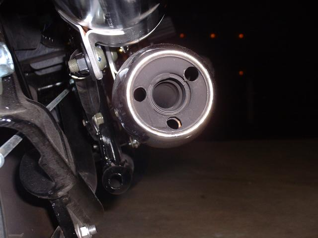
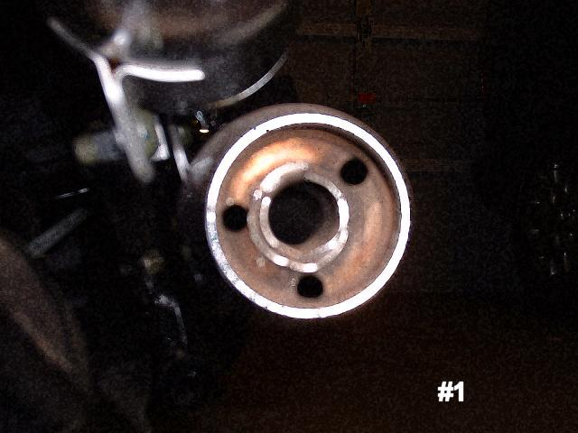
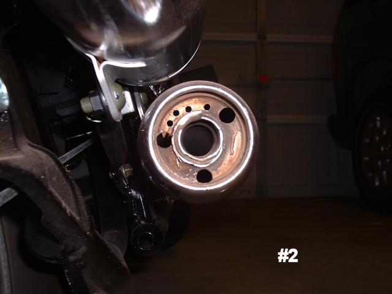
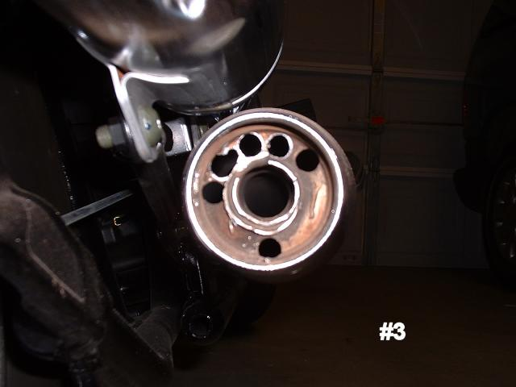
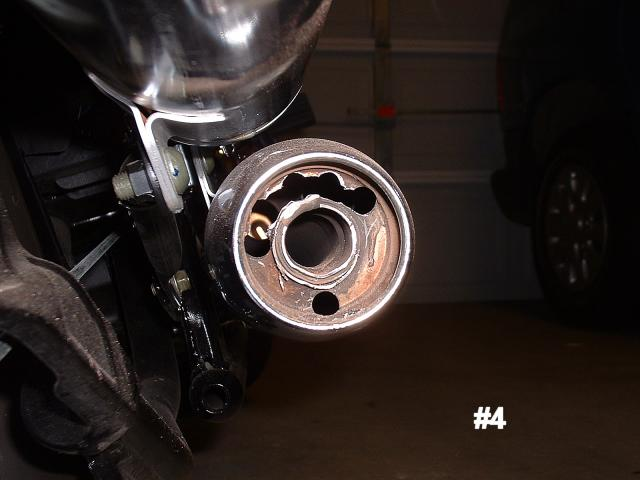
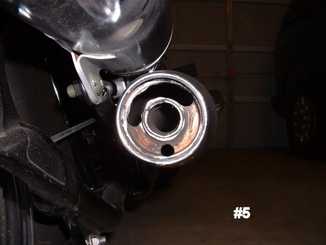
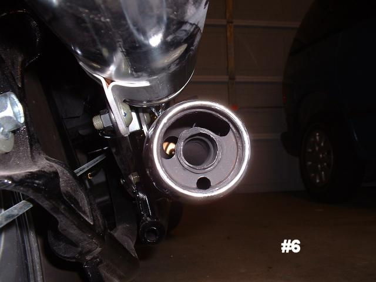
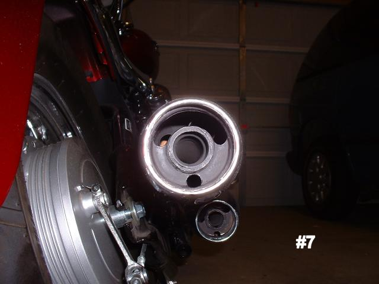

Telmo Brito's Exhaust Mod
These are Pictures and descriptions of how I did Telmo Brito's Exhaust mod on an American VStar 650
| I had previously done the 3 hole mod on my stock exhaust pipes. |  |
| Then I removed the cone by using a dremel. I cut through the weld at the top and removed the cone with plyers. You can also use a 1 1/4 hole saw bit. Pic #1 (edit: The cone on the later model V-Stars are welded all the way around.) |  |
| With the cone removed, I drilled 4 pilot holes between my already existing holes. Pic #2 |  |
| I then enlarged the pilot holes using a 3/8 bit. Pic #3 |  |
| Using a round file and Dremel grinder I started to file the excess metal to open the space completely #4 |  |
| The rest was grinding and finishing with my Dremel and file to smooth the edges. Pic #5 |  |
| The last step was to paint with high temp enamel, like you might use on a grill. Telmo Brito used silver, I happened to have black. It needs another coat, but you get the idea. Pic #6 |  |
| Here is the finished top pipe. This was taken before I finished the bottom pipe, so the bottom is unfinished in this pic. Pic #7 |  |
The resulting sound from this mod is a much deeper not so tinny sound as compared to the 3 hole mod. It definitely has a nice "Bark" when you hit it, yet it's not over-powering or too loud. I absolutely give this mod a thumbs up. Great job by Telmo Brito in coming up with this.